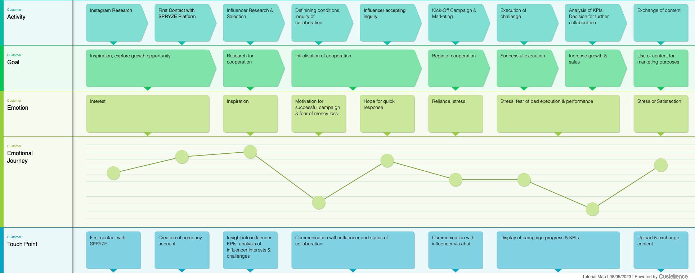
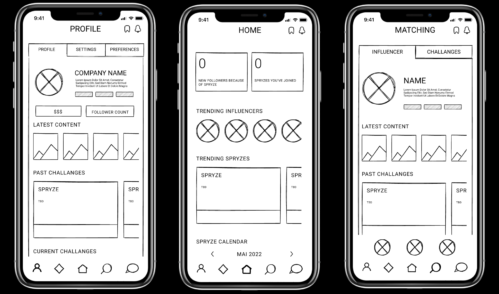
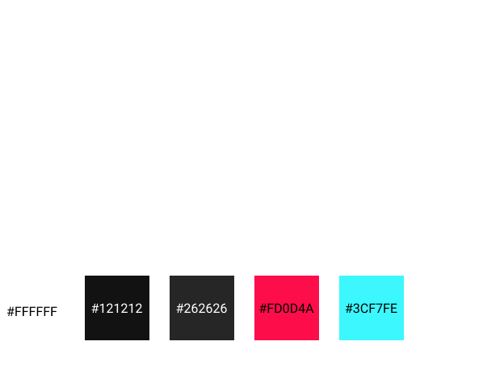

This work was part of a university project. The project was to enhance the existing concept of "SPRYZE", which empowers influencers to create more compelling and engaging content while earning extra income via direct micropayments from their followers. My two team members and I decided to focus on the perspective of marketing managers.
We began with a market research looking at applications that are currently available in the field of influencer marketing. We then conducted interviews with potential users to understand their needs and problems.
Based on the interview insights, a customer journey map from the perspective of a marketing manager was created. This helped to identify pain points and opportunities for improvement for managers to start collaborations with influencers.

The following aspects were identified as the most important pain points:
After having explored various aspects of our future users and stakeholders,
we came up with a concept to
improve their pain points. Our idea was to implement a matching algorithm between company accounts and
influencers based on their interests. The central functionality was to be a swiping mechanism to accept
or decline campaigns. An additional dashboard would provide an overview of the
current status of the campaigns.
The main use cases that we wanted to realise in our app were determined:
Based on the use cases and our concept, some first drafts of the app and its functionality were created.
After reviewing the drafts in our team and refining certain aspects, we implemented the corresponding wireframe designs in Figma.
We continued with user testing to get early feedback on our wireframes. We conducted six interviews with potential users and asked them to complete certain tasks from the perspective of a marketing manager. The feedback was evaluated, discussed within our team and integrated into our prototype.
The next step was to create a high-fidelity prototype. We took the already implemented design for SPRYZE into consideration to not conflict with the existing design language. We created a Figma library consisting of components and variants to incorporate a consistent style throughout the app.
Companies and influencers are recommended based on similar interests. By swiping to the right the collaboration is accepted - by swiping to the left the collaboration is declined.
The dashboard displays the most important information for the company account at once. It consists of important indicators, a calendar with upcoming challenges and trending challenges and influencers.
To not lose track of the current status of multiple campaigns each campaign is displayed and can be monitored.
After the implementation of the high-fidelity prototype, we conducted another
round of user testing.
Afterwards the users filled out the UEQ User Experience Questionnaire and the SUS System Usability
Scale.
The SUS resulted in an average score of 79,3. The UEQ results are listed below:
Despite the considerable time and effort we have invested in this project, it would require additional refinement if it were a live project. Furthermore, accessibility aspects would have to be considered. However, we have made significant progress and the insights we have gained from user testing have been tremendously valuable.